图标大类
策略搜索关键词: tradingview, Page 3 , Feibonacci
Community /Scripts /Trend Analysis/ Fibonacci
Market Structure Volume Distribution [LuxAlgo]
https://cn.tradingview.com/script/Mzdl5F5b-Market-Structure-Volume-Distribution-LuxAlgo/
通过市场结构成交量分布工具，交易者可以在确定的价格范围内识别市场结构突破背后的力量，从而直观、轻松地衡量牛市和熊市之间力量的相关性。
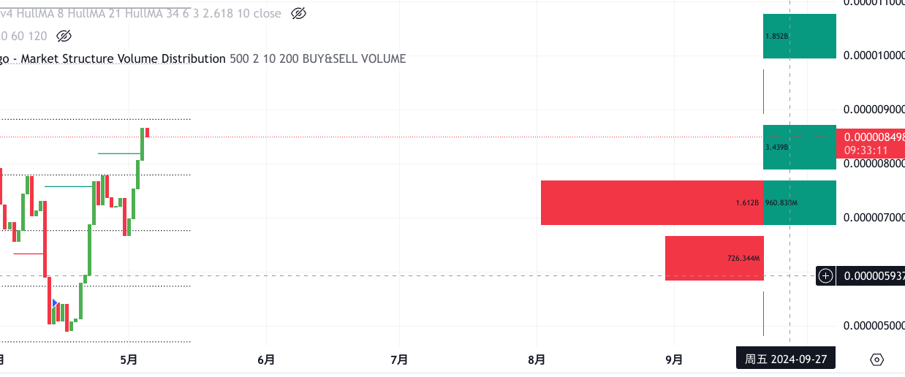
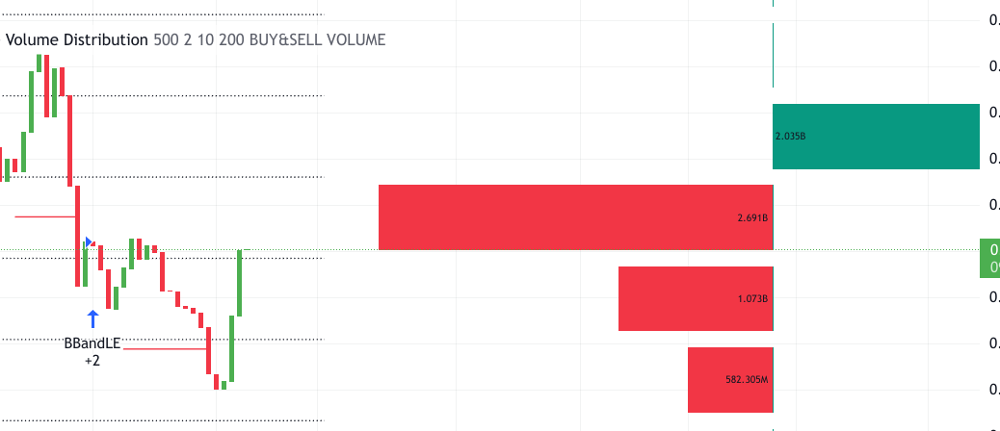
Mxwll Price Action Suite [Mxwll]
在比特币交易中,LH、LL等术语通常指的是价格形态分析中的一些特定模式。
LH是"Lower High"的缩写,指的是较低的高点。LL是"Lower Low"的缩写,指的是较低的低点。
这些术语源自对价格走势的分析,尤其是在研究价格的高低点时使用:
HH (Higher High) - 较高的新高点 HL (Higher Low) - 较高的新低点 LH (Lower High) - 较低的新高点 LL (Lower Low) - 较低的新低点 通过观察价格形成的高低点模式,交易者可以识别出可能的反转信号或者持续趋势的迹象。例如,连续的LH和LL可能预示着下跌趋势,而HH和HL则可能意味着上涨趋势。
这些术语和模式分析在技术分析中被广泛应用,用于研究各种交易品种的价格走势,包括比特币等加密货币。通过结合其他技术指标,交易者据此进行买卖决策。
自动斐波那契水平线 自动计算并绘制斐波纳契回撤水平线，这是交易者常用的工具，用于根据过去的走势识别潜在的反转点。 黄金比例为 0.618 , 自然界的很多都有这种规律
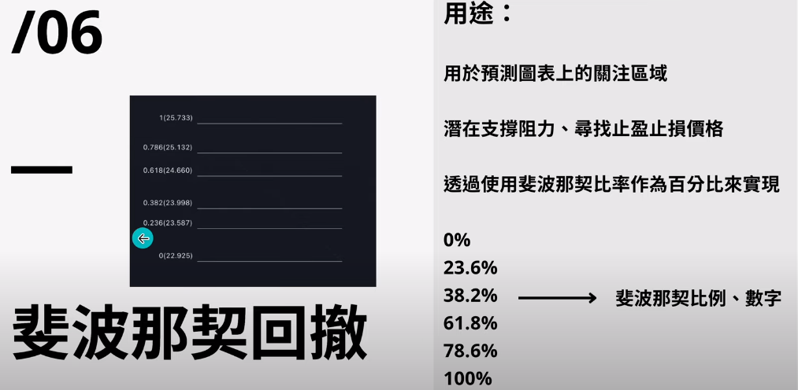
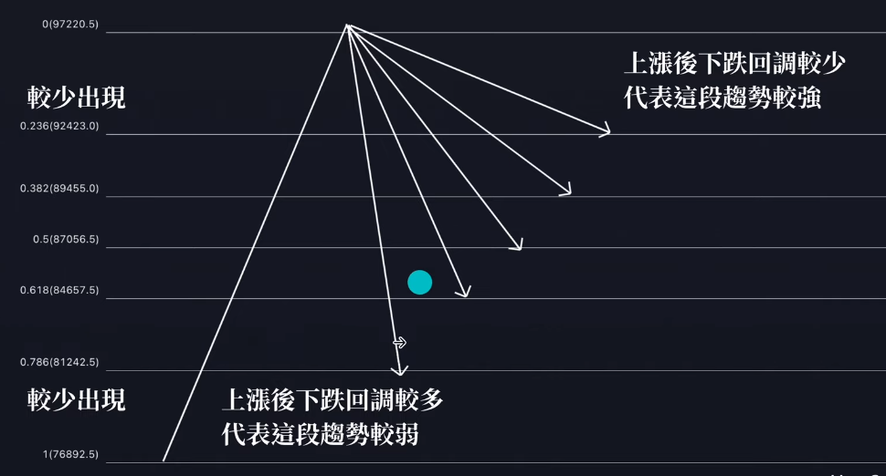
一般到达 0.618 这个线的时候就会趋势逆转
该方法 在大时间级别优先参考,小于15m一下不建议使用。
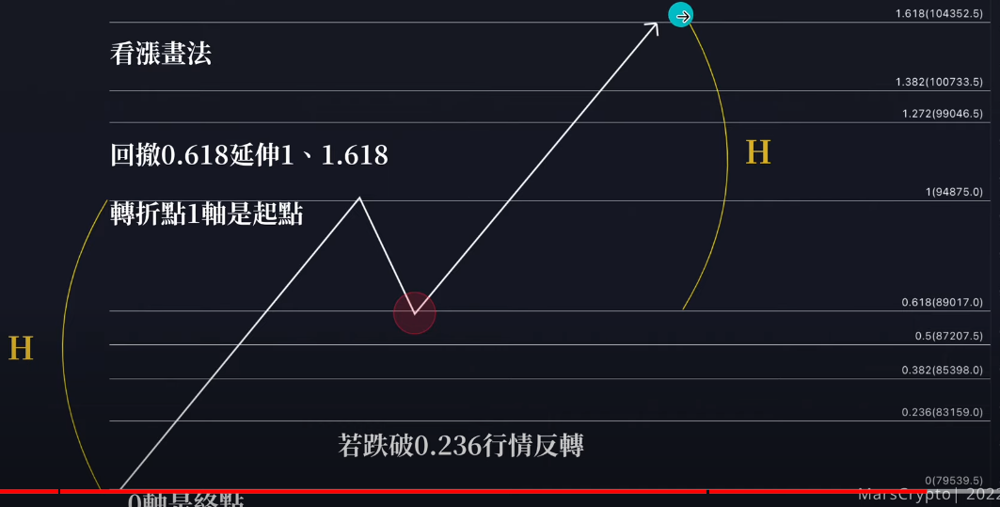
https://www.youtube.com/watch?v=1biLEpNQF-o
可以绘制斐波那契数列
斐波那契比例从斐波那契数列得出，一般采用0%、23.6%、38.2%、50%、61.8%和100%。
其他参考:
https://www.tradingview.com/script/JU3WaXGC-Order-Blocks-W-Realtime-Fibs-QuantVue/
基于斐波那契数列 和 rsi 计算
可用: 同上
-
ZigZag Multi Time Frame with Fibonacci Retracement
-
Zigzag Fibonacci Golden Zone [UAlgo]
-
Fibonacci Timing Pattern II 横盘使用
-
Order Blocks W/ Realtime Fibs [QuantVue]
-
ZigZag++ Fibonacci
-
Fib top and bottom Hunter - No Repaint
-
Auto Fibonacci Levels + Auto Trend Line generator (网格交易可用参考)
-
Fib top and bottom Hunter - No Repaint brutaltraderyt
-
ZigZag with Fibonacci Levels
时间分析类
ICT Killzones [LuxAlgo] LuxAlgo
Killzones 由外汇交易商 ICT 推出，代表不同的时间间隔，旨在提供最佳的交易入口。杀区包括 纽约杀区（东部时间 7:9） 伦敦开盘杀区（东部时间 2:5） 伦敦收盘杀区（东部时间 10:12） 亚洲杀区（美东时间 20:00）
网格交易专用
- DonchianFib[Akcay]
基于斐波那契数列
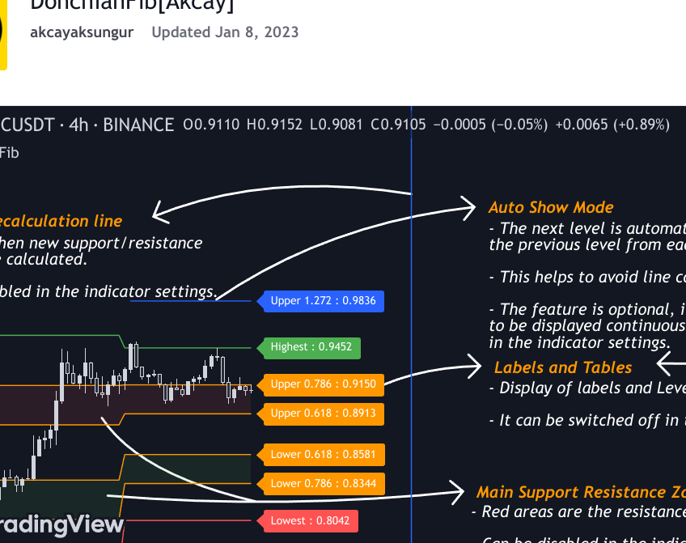
- Auto Fib Speed Resistance Fans by DGT
阻力分析
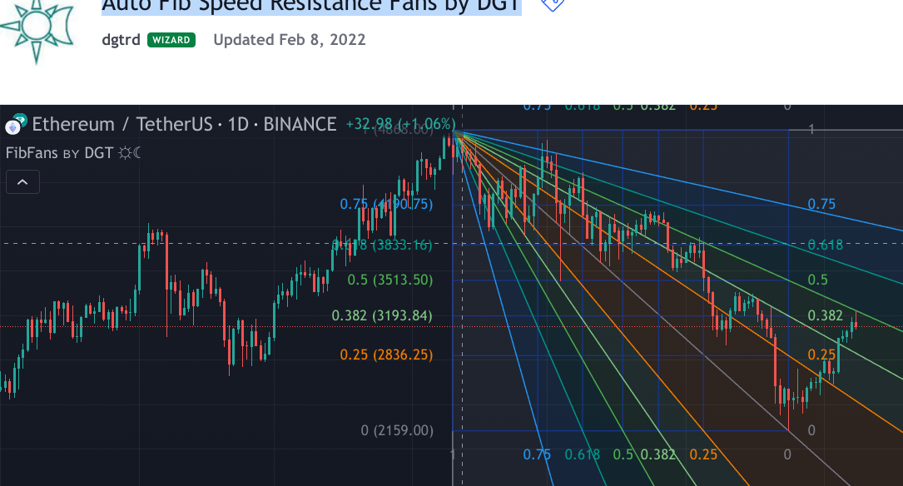
交易者可以利用斐波那契速度和阻力扇形线来预测阻力或支撑的关键点，并预期价格趋势会在这些点发生逆转。一旦交易者识别出图表中的形态，他们就可以利用这些形态来预测未来的价格走势以及未来的支撑位和阻力位。交易者利用这些预测来把握交易时机。在上升趋势和下降趋势中，关键支撑位和阻力位往往经常出现在 61.8 百分位。
翻译: 似乎没有人知道，斐波那契工具之所以有效，是因为市场呈现出某种形式的自然模式，还是因为许多投资者利用斐波那契比率来预测价格走势，使其成为自我实现的预言。
评论:
And another great tool for the community ;) Just learned gifting, so I am going to double down lol Thank you for being so cool Great tool as always! Thanks for sharing!
- TMsignal - Auto Fibonacci V1.0
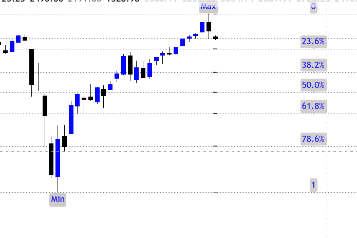
风险计算 (有用)
(mark)
Trailing Management (Zeiierman)
跟踪管理（Zeiierman）指标集成了盈亏平衡曲线（Break-Even Curve）功能，以增强其在跟踪止损管理和风险回报优化方面的实用性。盈亏平衡曲线显示了交易既不增值也不亏损的精确点，使风险回报更加清晰。此外，这一精确点是根据所需赢率和风险/回报率计算得出的。这种计算方法有助于交易者了解他们在任何特定时间需要采用哪种策略才能盈利。换句话说，交易者可以根据价格在风险/回报框中的位置，在任何给定的点上评估他们需要采用哪种策略才能赚钱。
该指标通过计算用户定义周期内的最高点和最低点来运行，然后应用这些信息来确定多头和空头头寸的最佳追踪止损位。 方向偏差： 该指标通过比较回溯期内最高点和最低点的指数来确定市场趋势的方向。
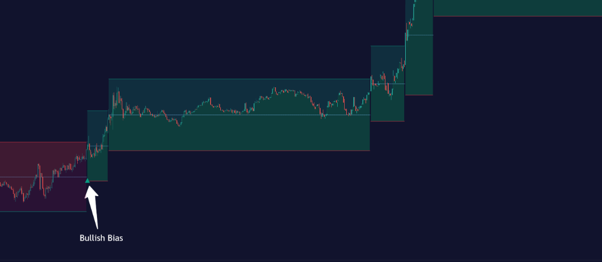
如图,绿色区域就是上涨的
移动止损调整： 使用三种方法之一调整追踪止损：根据最近峰值差的中位数、枢轴点或用户定义的固定百分比自动计算。 盈亏平衡曲线： 盈亏平衡曲线以及风险/回报比通过跟踪法确定。这种方法利用当前收盘价作为交易的假设进场点。所有计算，包括曲线的计算，都以当前收盘价为基础，确保实时准确性和相关性。随着市场行情的波动，曲线会动态调整，为交易者提供一个可视化的基准，标志着盈亏平衡点。这种实时调整为交易者提供了一个宝贵的工具，使他们能够直观地跟踪市场变化如何影响他们的交易既不增值也不亏损的点。 举例说明： 假设价格处于风险/回报框的中点，这意味着风险/回报率应为 1:1，最低胜率为 50%，才能实现收支平衡。
换句话说，交易者在任何时候都可以根据价格在风险/回报箱中的位置，评估他们需要采用哪种策略来赚钱。
策略选择： 盈亏平衡曲线是管理风险的有力工具，交易者可以直观地看到追踪止损点与市场价格走势之间的关系。通过了解盈亏平衡点的位置，交易者可以调整策略，锁定利润或减少损失。 根据绘制的风险/回报框和价格在框内的位置，交易者可以很容易地看到在风险/回报率的情况下，其策略长期盈利所需的赢利率。 请看这个例子： 市场看涨，如偏向指标所示，指标建议进行多头交易。价格接近风险/回报箱的顶部，这意味着现在入市风险巨大，潜在回报很低。要做这笔交易，交易者必须有一个胜率至少为 90% 的策略。
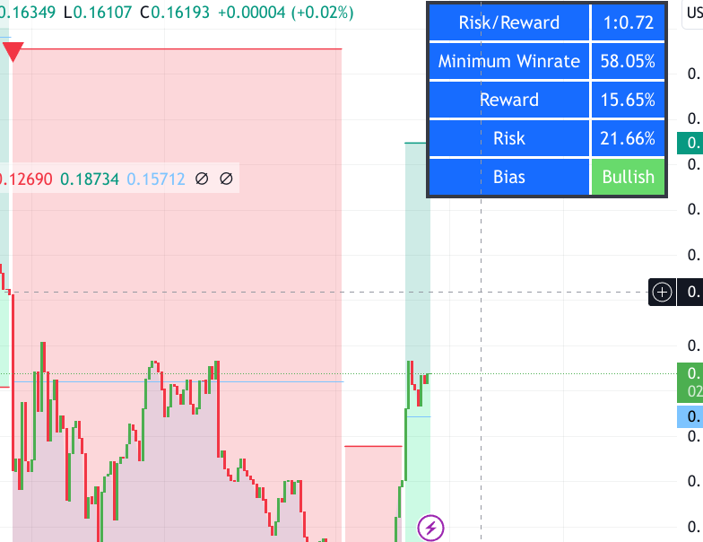
这个脚本能够 计算当前点位交易的胜率
Trailing Size (prd): This setting defines the lookback period for the highest high and lowest low, which affects the sensitivity of the trailing stop to price movements.
Percentage Step (perc): If the ‘Percentage’ method is selected, this setting determines the fixed percentage for the trailing stop distance.
Set Bias (bias): Allows users to set a market bias which can be Bullish, Bearish, or Auto, affecting how the trailing stop is adjusted in relation to the market trend.
追踪大小 (prd)： 该设置定义最高价和最低价的回溯周期，影响追踪止损对价格变动的敏感度。 百分比步长 (perc)： 如果选择 “百分比 “方法，该设置将确定移动止损距离的固定百分比。 设置偏差 (bias)： 允许用户设置市场偏向，可以是看涨、看跌或自动，从而影响根据市场趋势调整移动止损的方式。
thank you for this amazing indicator As always excellent work Mr.Z
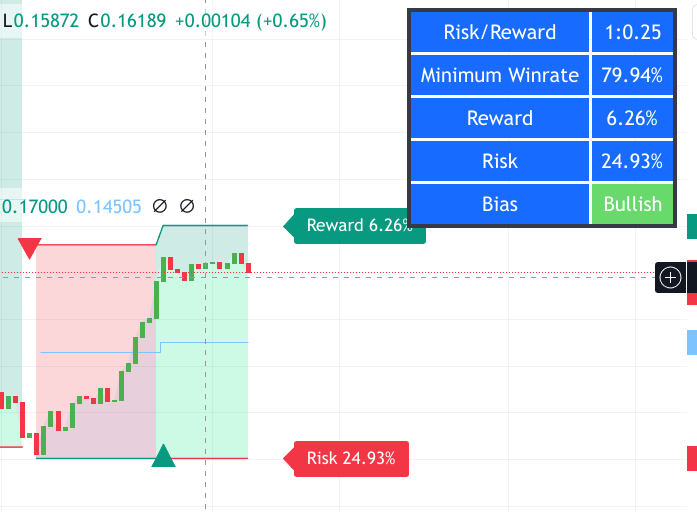
如图,盈亏比是 0.25
也就是说 每risking 1单位的亏损,你期望获得0.25单位的利润。
换句话说,你的亏损风险是你预期利润的4倍(1/0.25 = 4)。
因此,盈亏比为0.25属于较低的比率,表明每次交易的潜在亏损是预期利润的4倍。这种设置风险相对较高,需要获胜率较高才能盈利。
专业交易者通常会追求较高的盈亏比,如1:2甚至更高,即每risking 1单位,期望获利2单位或更多。这样可以在获胜率较低的情况下也能盈利。
总的来说,盈亏比0.25属于较低的比例,代表风险较高,除非你有非常高的获胜率,否则可能会面临长期亏损。合理控制风险是交易中非常重要的一课。
信号类
- Fibonacci levels alerted as Support and Resistance lvls
阻力位的计算方法是，价格走势未能在纤维水平上方收盘或开盘，但其高点却越过了该水平。这基本上意味着价格走势太弱，无法突破这一水平。
支撑位也是如此，价格在纤维水平上方开盘和收盘，但价格低点却在纤维水平下方。这意味着熊市无法突破支撑位，并有可能反弹。 本脚本使用 0.764、0.618、0.5、0.382 和 0.236 水平。如果需要，还可以在脚本中添加更多内容。 我个人使用该脚本来帮助指导潜在交易的进场和出场，以及帮助标记价格目标和出场水平。不过，我从不单独使用该脚本，而是积极确保它与其他技术指标一起使用。
- Tweezers and Kangaroo Tail
两种模式
Tweezers - Aparted 和 Kangaroo Tail - Bullish
Tweezers在比特币和加密货币交易中,是一种反转模式的术语。它描述了K线图上的一种特殊形态,看起来像一把剪刀或钳子。
Tweezers模式由两根近乎相同高度的K线构成,中间由一个较低的小阴线或小阳线分隔。形象地说,就像剪刀的两把刀片,中间由一个转折点连接。
Tweezers模式可以出现在上涨趋势的顶部或下跌趋势的底部,分别被称为:
Tweezer Tops - 在上涨趋势顶部形成,可能标志着反转迹象。 Tweezer Bottoms - 在下跌趋势底部形成,可能标志着反转迹象。 Tweezers模式被认为是一种较弱的反转信号,通常需要结合其他指标和模式来确认反转。但如果配合其他因素,它可以被视为一个潜在的入场或出场时机。
总的来说,Tweezers是一种常见的价格行为模式,交易员会密切关注它,作为可能反转的早期迹象。当发现这种模式时,交易员需要保持谨慎,并等待进一步确认信号
Kangaroo Tail： 袋鼠尾巴 - 看涨
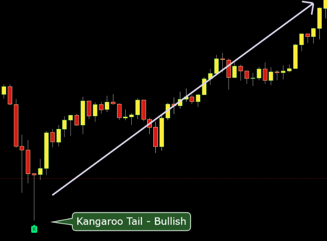
评论:
thank you, Lonesome
I need to write a script that automatically ‘Favorites’ Lonesome’s scripts as soon as they are published.
i think this script its gonna make someone rich. consistency profits
- Market Structure Algo (上升或者下降趋势)
https://www.tradingview.com/script/IUR1cEYW-Market-Structure-Algo/
大趋势分析工具
- Dynamic Trailing (Zeiierman)